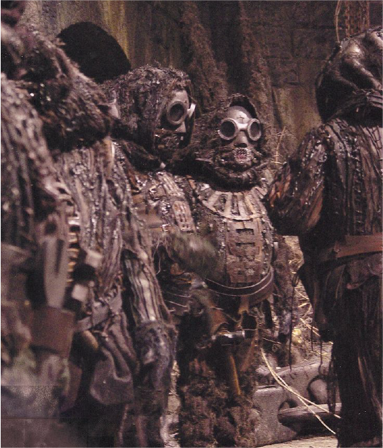
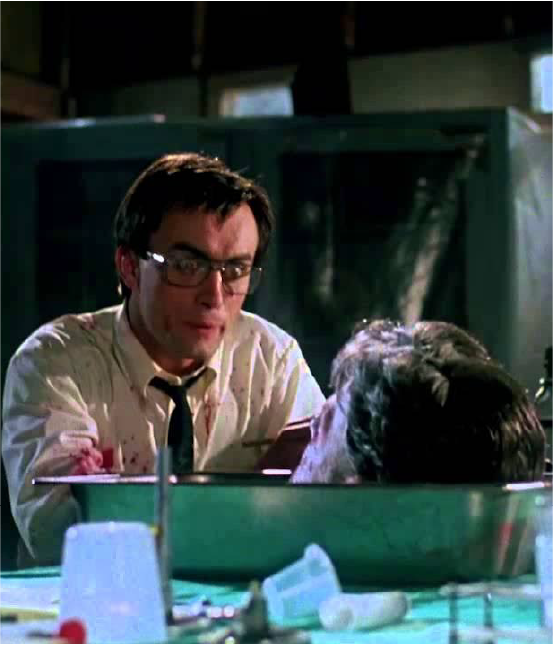
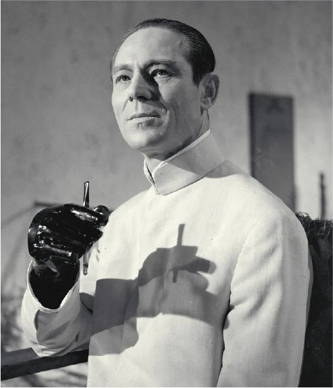

Mad scientist of the month
Victor Frankenstein
Victor Frankenstein embodies the spirit of mad science: brilliant, bold, and just a little bit reckless. His work reminds us that pushing boundaries leads to discovery but also that forgetting about things like “emotional well-being of your creation” can come back to haunt you.
Pro tip:
Always double-check your experiment’s emotional support needs before introducing them to torch-wielding villagers.
Read more >Trending topics

Minion Retention Strategies
Tired of high turnover among your work force? Explore proven techniques to keep your minions loyal, motivated, and less likely to unionize.
Read more >
Ethics of Reanimation
Is it okay to stitch together life just because you can? A lively debate on where science ends and arrogance begins.
Read more >
Capes vs. Lab Coats
Fashion matters. We break down the pros and cons of dramatic capes versus practical lab coats for the modern mad scientist.
Read more >Hidden Volcano Lairs
From real estate hacks to lava-proofing tips, we explore why underground volcano lairs remain the gold standard for ambitious geniuses.
Read more >